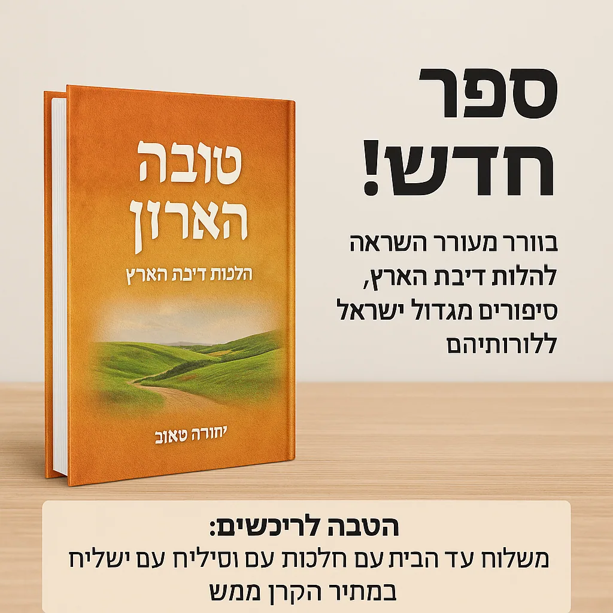
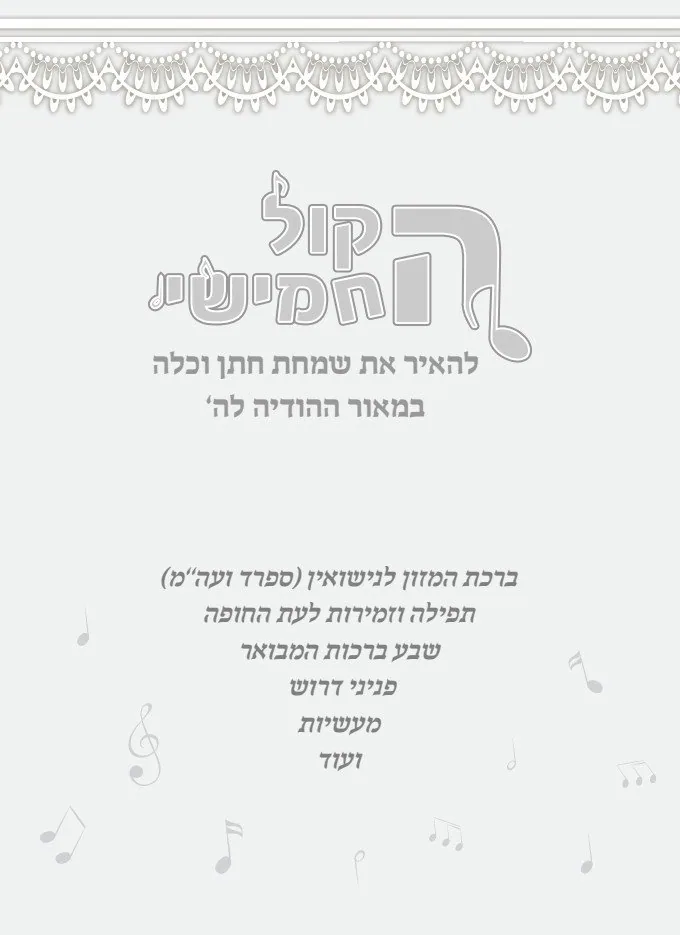
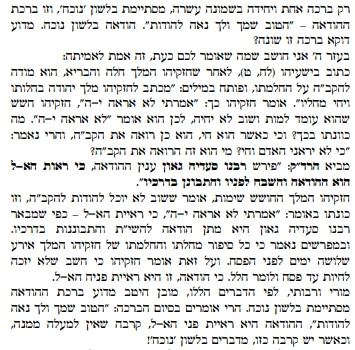

הקול החמישי – חתונה ובית יהודי
ההודיה בחתונה, שבע ברכות, קדושת הנישואין והשמחה בבית היהודי
39 פריטים
אוספים ועמודים ראשיים

ששון ושמחה בבית היהודי
ספר חדש הלכות דיבת הארץ קרא עוד

הקול החמישי - ההודיה בחתונה
הקול החמישי ההודיה בחתונה עמדות לעולם אודך ברחבי הארץ רשימת העמדות שמוכרות מוצרי קול תודה. לחץ כאן לקריאה קטלו…

חתונה מלאה שמחה
חתונה מלאת שמחה הקול החמישי - לשמחת חתן וכלה לחוש את ההודיה בחתונה, עם סיפורים תפילות וברכהמ"ז לנישואין בהקמת …
מפתח החיים - הכנה ללידה, אוצר ההודיה לבת המצווה, הקול החמישי
חתונה מלאת שמחה הקול החמישי - לשמחת חתן וכלה לחוש את ההודיה בחתונה, עם סיפורים תפילות וברכהמ"ז לנישואין בהקמת …

הקול החמישי - בחתונה
רעיונות נפלאים להודיה בחתונה קרא עוד השיר - לכבוד החתן בחור מעם קרא עוד סיבת השמחה הגדולה השיר - שמח תשמח רעים…

ששון ושמחה לחתן ולכלה עד 120
טובה הארץ - מאוד מאוד המדריך המקיף בנושא בנית בית בארץ ישראל ואופן קניתו מה מכיל הספר? ומה תוכנו? קרא עוד בית …
ששון ושמחה בבית היהודי (1)
הקול החמישי - ההודיה בחתונה (6)
עמדות לעולם אודך ברחבי הארץ
הקול החמישי ההודיה בחתונה עמדות לעולם אודך ברחבי הארץ ברחבי הארץ יש נשים יקרות שהקימו עמדות בהן הן מוכרות את …

קטלוג מוצרי קול תודה
הקול החמישי ההודיה בחתונה קטלוגים של המוצרים קטלוגים של המוצרים הורד קובץ MP4 • 0KB קטלוגים הערות

אנו מודים לך על התשלום
הקול החמישי ההודיה בחתונה אנו מודים לך על התשלום בעז"ה נשלח לך את הספר/המוצר תוך כמה ימים במשלוח ישיר עד הבית…

סיפור עלית רבי מנחם מנדל מויטבסק ועלית תלמידי הבעל שם טוב
הקול החמישי ההודיה בחתונה סיפור עלית רבי מנחם מנדל מויטבסק ועלית תלמידי הבעל שם טוב הורד קובץ MP4 • 0KB עמדות…

הקול החמישי - ההודיה בחתונה
הקול החמישי ההודיה בחתונה הקול החמישי - ההודיה בחתונה כתבה בעיתון קול ברמה על הרב דביר- שמדבר על הודיה בחתונה…

חומר על חשיבות ההודיה
הקול החמישי ההודיה בחתונה חומר על חשיבות ההודיה כוחה של הודאה להשם במשנת המהרש"א - הרב שמעון שפיצר הורד קובץ …
מפתח החיים - הכנה ללידה, אוצר ההודיה לבת המצווה, הקול החמישי (2)
הקול החמישי - לשמחת חתן וכלה
חתונה מלאת שמחה הקול החמישי - לשמחת חתן וכלה לחוש את ההודיה בחתונה, עם סיפורים תפילות וברכהמ"ז לנישואין בהקמת…

הקול החמישי - לשבע ברכות
חתונה מלאת שמחה הקול החמישי - לשבע ברכות באור נפלא מלא רגשות הודיה לשבע ברכות הנישואין ביאור קל ועממי לשבע בר…
הקול החמישי - בחתונה (24)
רעיונות נפלאים להודיה בחתונה
הקול החמישי - בחתונה רעיונות נפלאים להודיה בחתונה ראון כאן בהרחבה https://gamma.app/docs/-emapv1gpryikyii או …

השיר - לכבוד החתן בחור מעם
הקול החמישי - בחתונה השיר - לכבוד החתן בחור מעם מקהלות עם / ר' מרדכי עבאדי מַקְהֵלוֹת עַם בָּרְכוּ אֵל הָרִימ…

סיבת השמחה הגדולה
הקול החמישי - בחתונה סיבת השמחה הגדולה השיר - שמח תשמח רעים אהובים בס"ד מהגאון ר' שלמה זלמן אויערבך זצ''ל טעם…
מקדש עמו ישראל - על ידי חופה וקידושין
הקול החמישי - בחתונה מקדש עמו ישראל - על ידי חופה וקידושין ישיש עליך אלוקיך - כמשוש חתן על כלה ההבדל בין קדוש…

קדושת הכלל: עומק מיוחד בברכת האירוסין
הקול החמישי - בחתונה קדושת הכלל: עומק מיוחד בברכת האירוסין השיר ידיד נפש קדושת הכלל: עומק מיוחד בברכת האירוסי…

שמחת בית השואבה - ושמחת חתן וכלה
הקול החמישי - בחתונה שמחת בית השואבה - ושמחת חתן וכלה שמחם בבנין שלם או אדיר הוא יבנה ביתו בקרוב העומק הפנימי…

המטרה הפנימית של שבע ברכות - הודיה
הקול החמישי - בחתונה המטרה הפנימית של שבע ברכות - הודיה שיר - כי הרבית העומק הנפלא בהודיה: המבט הפנימי על שבע…

ברית היהדות - נישואין
הקול החמישי - בחתונה ברית היהדות - נישואין ישיש עליך אלוקיך עומק הנישואין: מבט על ברית האהבה בין השי"ת וכנסת …

עומק הקדושה בקידושין
הקול החמישי - בחתונה עומק הקדושה בקידושין השיר אנא בכוח עומק הקדושה בקידושין: בין קידוש ה' למעילה בקודש הנה ד…

העומק הנפלא בשם "קידושין": מבט פנימי על קדושת הנישואין - ה...
הקול החמישי - בחתונה העומק הנפלא בשם "קידושין": מבט פנימי על קדושת הנישואין העומק הנפלא בשם "קידושין": מבט פני…

מבראשית עד אחרית
הקול החמישי - בחתונה מבראשית עד אחרית השיר - כי לא תמו חסדיך העומק הנפלא בשבע ברכות: מבראשית עד אחרית יסוד מו…

באור השבע ברכות - בקצרה
הקול החמישי - בחתונה באור השבע ברכות - בקצרה ברכת הבריאה, וברכות השמחה שאלות חלק את שש ברכות הנישואין (מלבד ה…

סולם השמחה
הקול החמישי - בחתונה סולם השמחה שמח תשמח העומק הנפלא בהודיה על רגשות הקודש: מבט פנימי על השמחה האלוקית הבה נת…

תעלומת הקול החמישי
הקול החמישי - בחתונה תעלומת הקול החמישי מהי תעלומת הקול החמישי בשבע הברכות? או מדוע גנבו את קול תודה מהחתונה?…

שני חלקי הודיה על נס
הקול החמישי - בחתונה שני חלקי הודיה על נס שני חלקים בשבע ברכות ובקול החמישי שאלות אדם שקרה לו נס או חסד ה' , …

ברכת שהשמחה במעונו
הקול החמישי - בחתונה ברכת שהשמחה במעונו ענינה ומהותה שאלות שהשמחה במעונו. היכן נמצא המעון של ה'? ומי נמצא שם?…

הלכות שבע ברכות
הקול החמישי - בחתונה הלכות שבע ברכות שאלות מי חייב בשבע ברכות: החתן, הכלה, או המסובים? מדוע בעלי השמחה צריכים…

דוי הסר
הקול החמישי - בחתונה דוי הסר באורו והלכותיו שאלות חתן וכלה הם דוגמת חתן וכלה שלמעלה . הסבר! איזה נפ''מ למעשה …

חמשה קולות במתן תורה ובנישואין
הקול החמישי - בחתונה הקול החמישי במתן תורה הקול החמישי במתן תורה הקשר בין מתן תורה לנישואין אמרו חז''ל (גמ' בר…

הכוס החמישית
הקול החמישי - בחתונה הכוס החמישית הלשון החמישית בגאולת מצרים שמות פרק ו (ו) לָכֵן אֱמֹר לִבְנֵי יִשְׂרָאֵל אֲ…

להחזיר את השפע
הקול החמישי - בחתונה להחזיר את השפע כתב הרב פינקוס בספרו שבת מלכתא (על תפילת 'אתה אחד'): כל שפע היוצא מאת הקב…

חנוכה והקול החמישי
הקול החמישי - בחתונה חנוכה והקול החמישי נרות חנוכה בבית המקדש של הבית היהודי ידוע יסודו של הרמב''ן (במדבר ח, …

מזמור לתודה בחתונה
הקול החמישי - בחתונה מזמור לתודה בחתונה טעם ראשון מזמור לתודה יש לאומרה בנגינה, שכל השירות עתידות ליבטל חוץ מ…

בנין עד עד - צלם אלוהים
הקול החמישי - בחתונה בנין עד עד - צלם אלוהים 🌟 "בצלמו... והתקין לו ממנו בנין עדי עד" - הסוד העמוק של השבע ברכ…